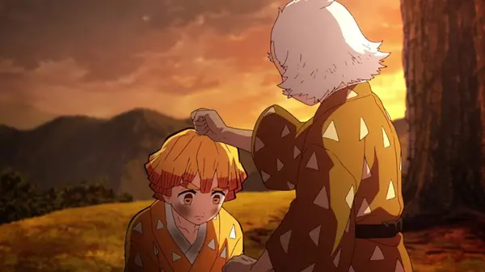
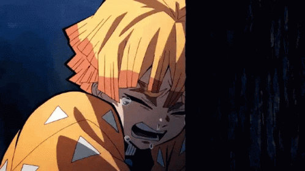
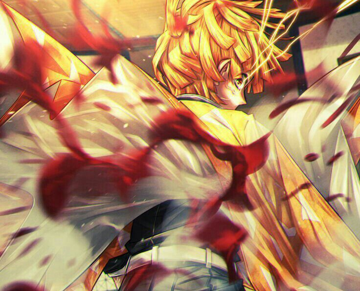
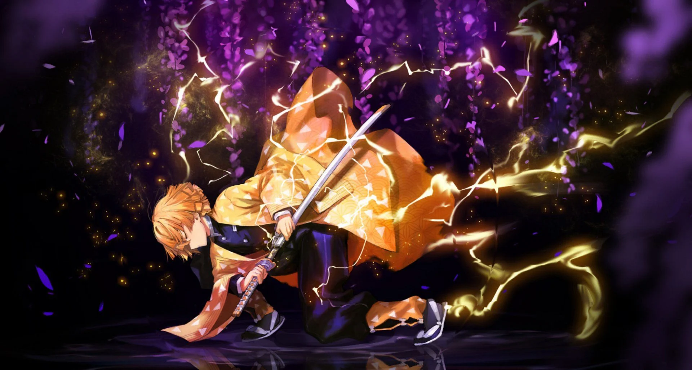
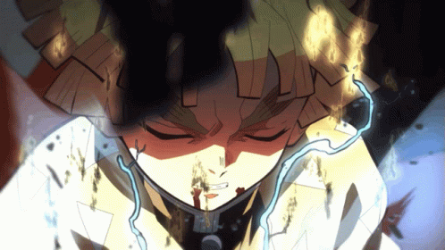
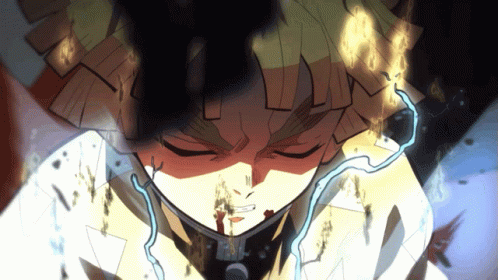

Zenitsu Agatsuma
História

No passado, por conta de ser muito mulherengo, Zenitsu foi enganado por uma mulher e acabou ficando
cheio de dívidas, tendo que trabalhar duro para pagar suas contas e as da trapaceira. Após fugir ao lado
da moça, graças a um velho a quem ele deveria chamar de "shihan" (professor), foi salvo, mas acabou
sendo obrigado a passar por um rigoroso treinamento para se tornar sucessor do velhote, que, no passado,
havia sido um Pilar do Corpo de Matança Demoníaca.
Não aguentando o intensivo treinamento, Agatsuma fugia constantemente e tentava se esconder, mas era
sempre achado pelo mestre, que não desacreditiva do seu potencial. Especialista na Respiração do Trovão,
aquele velho senhor desejava que seus dois discípulos, nosso Zenitsu e um jovem um tanto quanto corrupto
chamado Kaigaku, caminhassem juntos para conseguirem a sucessão como Pilar.
Diferentemente do concorrente como aluno (o mais velho), Zenitsu aprendeu apenas um dos seis estilos da
Respiração do Trovão (o inicial e mais simples, porém, fundamental), enquanto o outro, cinco, menos
justamente o primeiro estilo. Kaigaku nunca se deu bem com Zenitsu e sempre o tratava mal, não o
aceitando como um discípulo e odiando o rapaz. Em um certo dia,
Agatsuma fugiu do treino e seu escondeu no topo de uma árvore, desistindo daquela vida difícil de
espadachim, cheio de pessimismo, argumentando que não tinha talento para tal.
Enquanto seu shihan, a quem chamava de "vovô", tentava motivá-lo e convencê-lo a descer, Zenitsu foi
atingido por um raio, mas, sabe-se lá como, acabou sobrevivendo e tendo seu cabelo, que era preto,
ficando loiro. Após a convivência com seu mestre e Kaigaku, Zenitsu participou da Seleção Final para
entrar no Corpo de Matança
Personalidade
O comportamento de Zenitsu, na maioria das vezes, é de uma pessoa extremamente medrosa. Ele quase sempre
chora quando está encurralado, correndo perigo ou quando é necessário entrar em combate. O próprio
Zenitsu se coloca para baixo, deixando claro que a baixa autoestima é uma característica muito presente
na personalidade dele. Não possui confiança nas habilidades que tem e, muitas vezes, de forma
pessimista, argumenta que tem que casar rápido pelo fato de achar que morrerá brevemente como um caçador
de demônios exposto demais ao perigo. Um aspecto que constantemente levava problemas ao espadachim era
seu desejo por mulheres, às vezes até passando dos limites, tentando forçar relações com garotas que não
o queriam.
Zenitsu possui, entretanto, um bom coração e é detentor de muita honestidade. Sua maior vontade é de
cumprir
os objetivos que lhe são dados e deixar as pessoas que acreditam no seu potencial satisfeitas. De modo
exagerado, ele consegue perceber e assumir as suas falhas, chegando ao ponto de, como dito, sentir-se
fraco
e incapaz; isso faz com que não enxergue as reais capacidades que retém. Apesar disso, é muito esforçado
e
deseja mudar sua forma de viver, querendo se tornar alguém útil. A determinação máxima do jovem Agatsuma
aparece somente quando algo abala muito o seu psicológico, como a morte trágica do mestre (que cometeu
suicídio).

Casa do Tambor

Embora tenha aparecido primeiramente no arco da Seleção Final, Zenitsu teve sua atuação inicial de
destaque na fase chamada de Casa do Tambor. Foi lá onde ele conheceu seus dois futuros companheiros de
jornada, Tanjirou Kamado e Inosuke Hashibira, além de ter protegido aquela que, sem ele saber, seria sua
grande paixão, a demônio Nezuko Kamado. Foi, também, no arco da Casa do Tambor que Zenitsu deu as
primeiras demonstrações de suas habilidades com a Respiração do Trovão.
Tudo começou quando Tanjirou o encontrou em uma estrada enquanto o loirinho mulherengo importunava uma
pobre garota com seus papos de casamento. Após o primeiro contato entre ambos e depois de levar broncas
do Kamado por ter complicado a vida da menina, Zenitsu e seu novo companheiro foram chamados para uma
missão emergencial, dessa forma, partiram juntos. Chegando ao local, os dois entraram na casa e
encontraram alguns demônios, entre eles o demônio do tambor (o principal), que tinha vários desses
instrumentos enfiados no corpo, que, com toques, moviam as pessoas para outros cômodos e lançavam
ataques.
Separado de Tanjirou, para seu desespero, Zenitsu avistou Inosuke Hashibira, um jovem que usa uma cabeça
de javali, e o confundiu com um monstro. Consecutivamente, foi perseguido por um demônio, enquanto
tentava proteger um garoto. Por conta do intenso medo, encurralado, Zenitsu entrou em colapso e dormiu;
foi nesse estado que suas habilidades
Após o fim dos acontecimentos nesse arco, o loirinho protegeu de Inosuke o caixote em que Nezuko estava, tudo porque Tanjirou havia afirmado ser de extrema importância para ele. Após isso, os quatro partiram para uma casa de apoio a caçadores de demônios para se recuperarem, sendo que foi onde Zenitsu conheceu a aparência de Nezuko, apaixonando-se loucamente pela menina. Logo após a recuperação, rumaram em direção à montanha Natagumo para a próxima missão.
Habilidades

Embora não se considere, Zenitsu é um espadachim caçador de demônios muito capacitado. Tendo um ex-Pilar
como mestre, o rapaz é adepto da Respiração do Trovão. Sua habilidade com a espada só aparece quando ele
dorme devido ao intenso medo e nervosismo, fazendo-o entrar praticamente em coma.
Desse jeito, Zenitsu
passa a usar com maestria sua lâmina usando o primeiro estilo da sua respiração. Apesar de estar
dormindo, ele age instintivamente, tendo seu subconsciente tomando controle; quando volta a si, não
lembra de nada que se passou enquanto dormia.
O fato de agir como se estivesse acordado se dar,
supostamente, devido à habilidade especial que esse caçador de demônios detém, que é a audição apurada.
Agatsuma consegue ouvir nitidamente muitos sons que pessoas comuns não conseguem. Além de escutar
barulhos mínimos e a longas distâncias, pode diferenciar pessoas e demônios somente pelos sons que eles
produzem. Quando está dormindo, entende perfeitamente o que os outros estão conversando ao seu redor.
 
